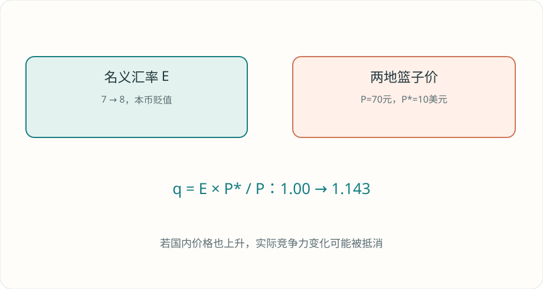

汇率理论与货币区
人民币每美元报价上升到底是升值还是贬值？把购买力、投资收益和货币联盟的制度权衡置于统一单位。
人民币每美元汇率上涨，是人民币升值还是贬值？
任何汇率公式都必须先明确报价方向。本文约定 E 为一单位外币兑换的本币数量，例如 E=7 表示购买1美元需7元人民币。在其他条件不变时 E 从7涨到7.5，购买一美元需要更多人民币，这表示人民币名义贬值；E 下跌才是按本约定的人民币名义升值。如果选择反向的美元/人民币报价，公式和符号解释就必须反过来。
购买力平价算的是货币之间的长期购买力线索
假设同样的可贸易商品篮子在国内价格 P=70 元，在美国价格 P*=10 美元。如果完全忽略运输、关税、销售税、非贸易品与质量差异，那么使两地篮子货币换算价格相等的名义汇率为 Eₚₚₚ=P/P*=7元/美元。若现实即期汇率为 E=7，教学例子中两地价格相等；若 E=8，则外国篮子换算为80元，高于国内70元。实际宏观 PPP 的消费篮子及计量方法远复杂于此。
为什么名义贬值未必提高本国出口竞争力
在本文报价下，令 q=EP*/P，表示外国篮子价格换成本币后相对于本国同类篮子价格的倍数。q 上升，外国商品相对变贵，在其他条件相同时本国产品的价格竞争力可能改善；q 下降则反之。如果本币名义贬值10%，但国内商品本币价格也同步上涨约10%，实际汇率未必明显变化。

这也不是「贬值保证增加净出口」：价格与工资调整、进口投入成本、出口产能限制、合同货币及国际需求都会影响贸易数量和收入。
高利率货币按利率平价会怎样变化？
假设国内名义利率 i=5%，外国利率 i*=2%，E₀=7元/美元。若两种无风险资产可自由交易、投资者风险中性、没有风险溢价与交易摩擦，未套期利率平价（UIP）的预期收益相等条件要求 1.05=(1.02)×(E₁ᵉ/7)，所以隐含预期 E₁ᵉ≈7.21。由于 E 上升代表本币贬值，较高国内利率对应预期本币贬值约2.94%来抵消利差，而不是保证它升值。
现实汇率风险溢价、资本管制、套期成本与市场预期可能使 UIP 在短期出现系统性偏离。有套期利率平价（CIP）约束的是远期汇率与利率差的无套利关系，需另行讨论交易摩擦与基差，不能把 UIP 的预测当作已锁定套利收益。
联动 PPP、实际汇率和 UIP 预期
仅用于同一种报价方向下的算术检验；两类平价关系并非实测预测模型。
一个区域共同使用货币，能省下什么又失去什么？
货币联盟减少成员之间的汇兑交易成本与名义汇率波动；但遭遇不对称冲击时，地区不能再通过彼此之间的独立名义汇率或政策利率调整。最优货币区理论因而关注成员经济冲击是否对称、劳动资本能否跨区域流动、工资价格能否调整，以及是否存在可信的跨区域财政风险共担机制。
| 衡量维度 | 有利于共同货币的条件 | 需要额外观察 |
|---|---|---|
| 成员冲击 | 行业结构与周期趋同 | 某地区单独受冲击时如何调整 |
| 劳动力与资本流动 | 要素能跨区域转移 | 法律、语言、住房等实际摩擦 |
| 财政分担 | 具备跨区风险共担机制 | 财政道德风险与治理安排 |
| 工资与价格调整 | 相对成本能逐步调整 | 长期失业与收入差距代价 |
来源与阅读
报价规则与理论使用官方/机构资料，金额和汇率是构造演算，不代表实际牌价。